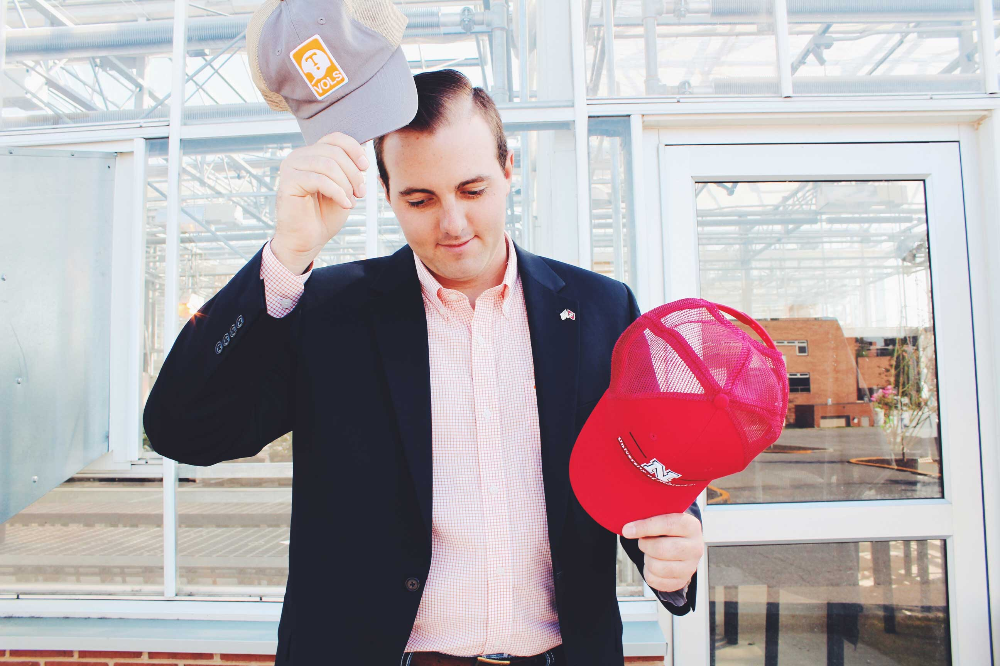

Samuel Thomas Koeshall
Samuel Thomas Koeshall is graduating with a Bachelor's Degree in Plant Science. He will pursue a Masters of Science in Agronomy at the University of Nebraska at Lincoln starting in the summer of 2017

Miriam Elese Koeshall
Miriam Elese Koeshall is graduating from ABeka Academy and will be attending the University of Tennessee at Knoxville in the fall. She plans to major in Human Resource Management.
Class of 2017
Come join us for a Progressive Dinner celebrating the graduation of Sam and Miriam. We will dine at three places. You can click on the links below and see the about page for more information.